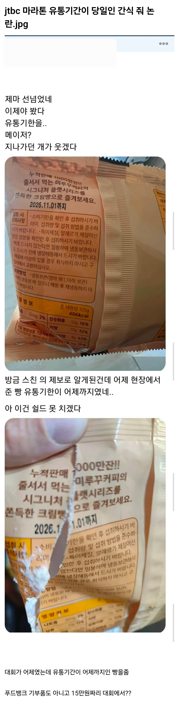
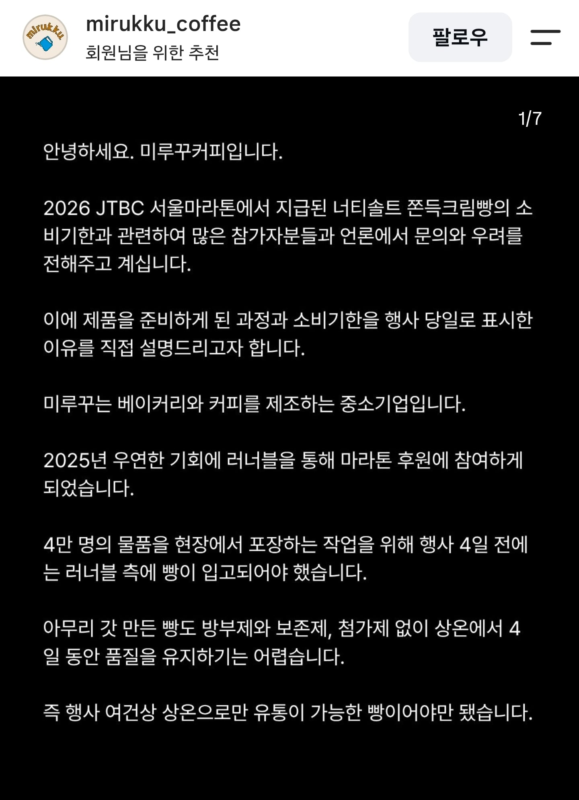
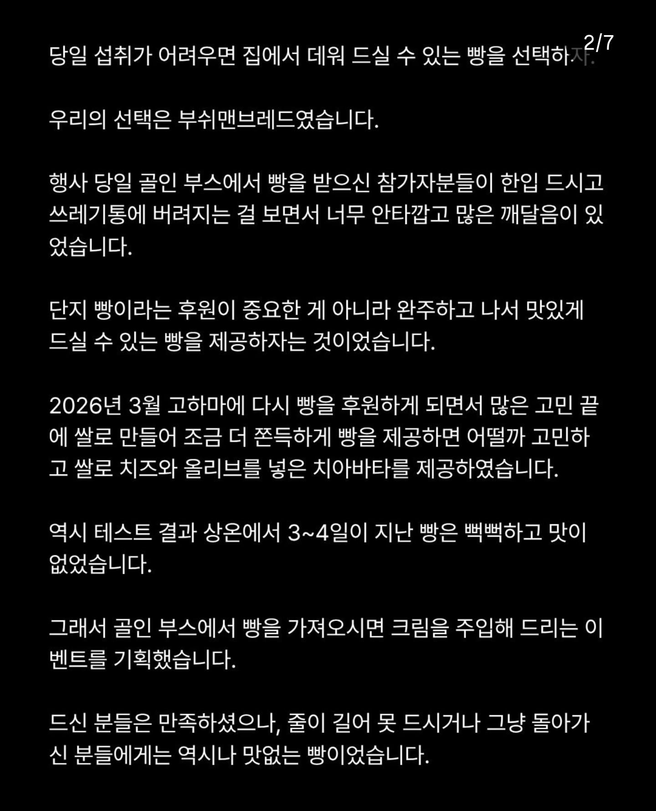
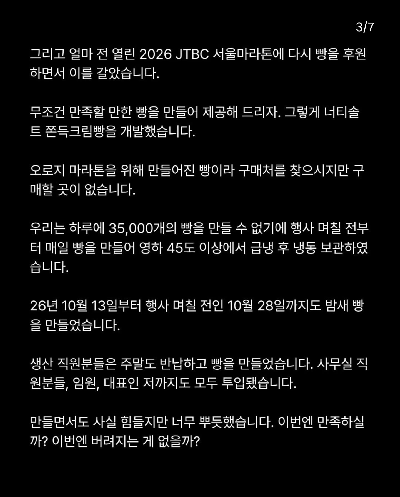
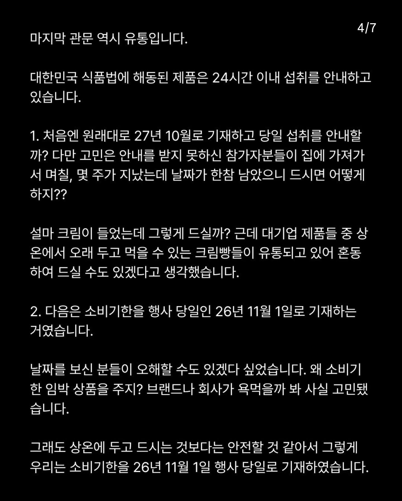
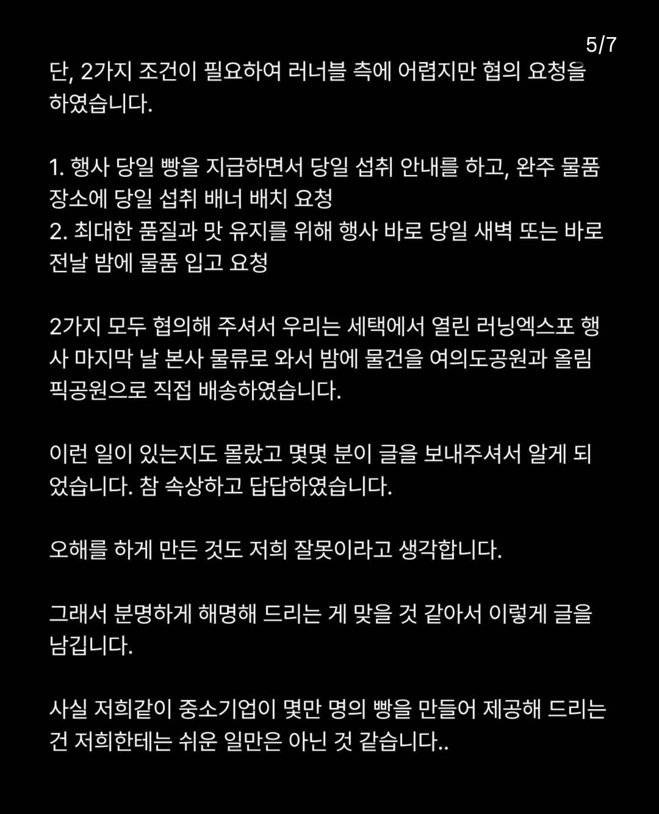
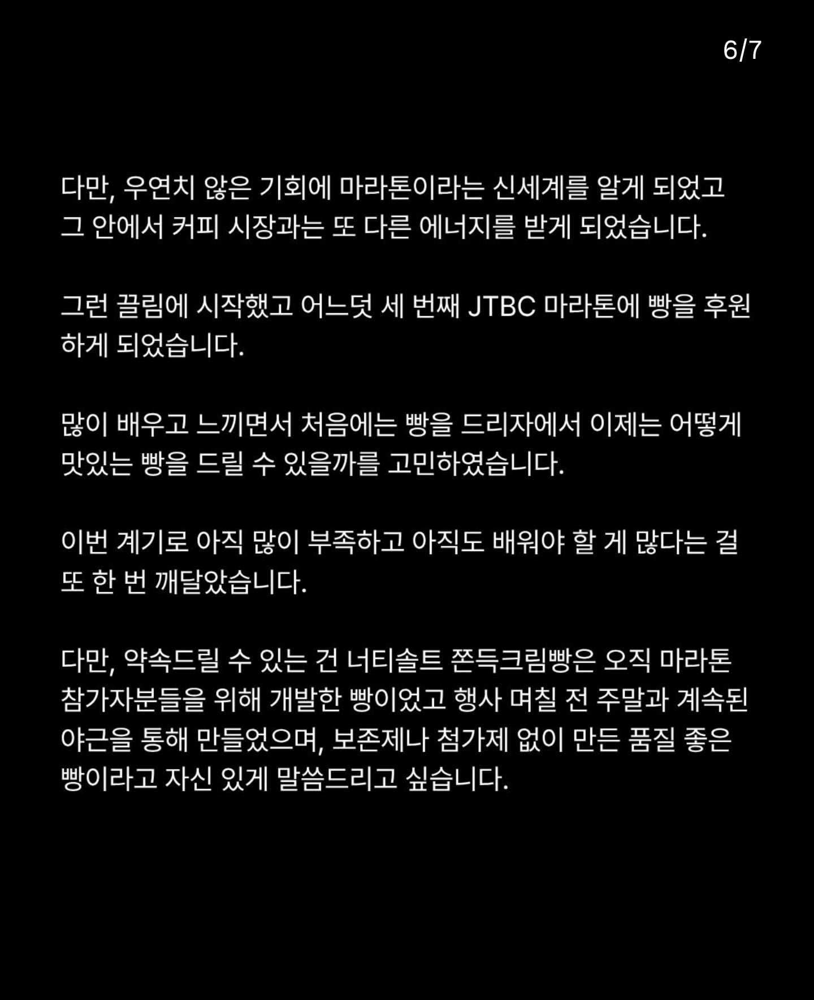
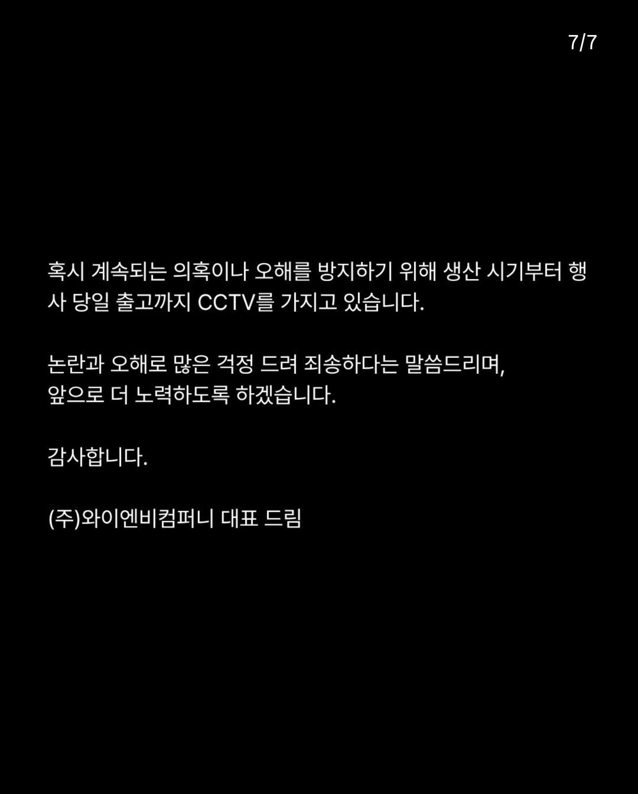

https://www.dogdrip.net/732804083
위 개드립간 글 보고나서 인스타 보다가 해당 업체에 대한 해명이 올라와 올림
링크에 대한 내용

해당 빵업체의 해명
내용이 길어 선요약 하자면
1. 마라톤 참가자들을 위해 특별 개발한 크림빵을 행사 직전까지 직접 생산·냉동 보관해 공급함.
2. 해동 후 상온 보관에 따른 안전 문제를 막기 위해 소비기한을 행사 당일로 표시함.
3. 소비기한 논란에 사과하며, 보존제 없는 제품이고 생산·출고 과정의 CCTV도 보유하고 있다고 해명함.







해명 게시글 링크
https://www.instagram.com/p/DfPSDFBk0iW/?img_index=7&obrf=MnI3NGI5cXMydGds
저렇게 제대로 준비해놓고 홍보를 안했누.. 어짜피 저기서만 파는 빵이면 봉지에 쓰지
당일드셔야 하는 빵입니다. 라고